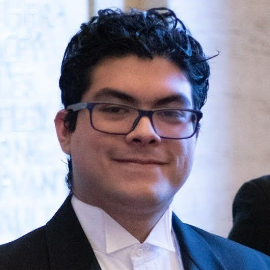
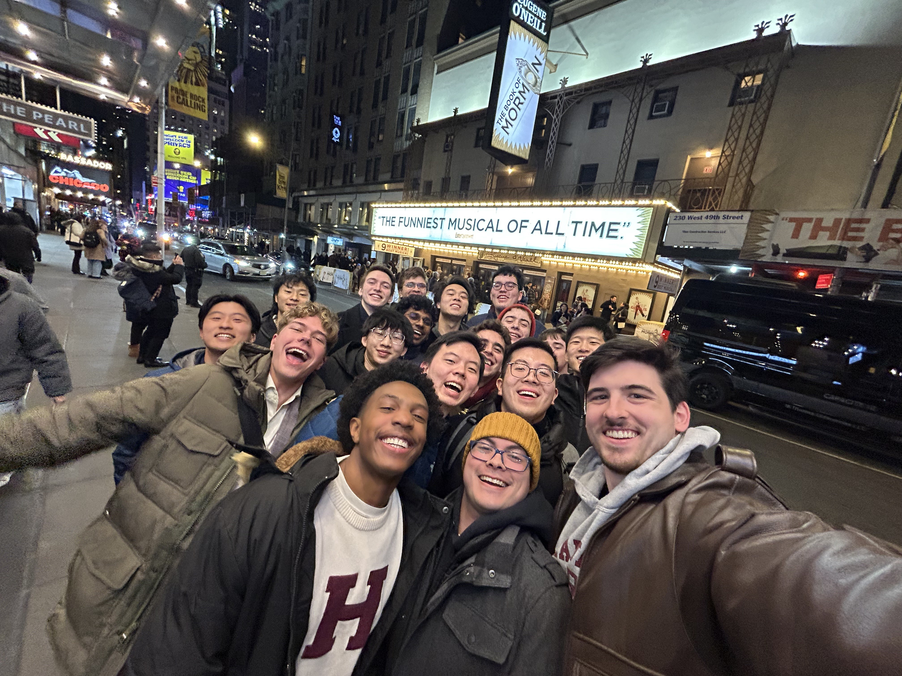

<div class="textcontainer">
<h3>About Me</h3>
<p class="margin"> </p>
<div class="center-row">

<p id="aboutme">
Hello! My name is Christopher Lapop and I'm currently a Harvard Graduate from the year of 2025. I graduated with a double concentration in Computer Science and Music. This summer I'm continuing my work as a mentor for the Crimson Summer Academy, and I'm staying in Quincy House.
</p>
</div>
<br></br>
One of my greatest experiences at Harvard has been being part of the Harvard Glee Club, where I sang as part of the Tenor I section. As part of the Glee Club, I've toured across Florida, Dominican Republic, London, Paris, Milan, Florence, Rome, Munich, Lisbon, and New York.
<br></br>

<br></br>
Here's my most recent Computer Science project video:
<br></br>
<iframe width="420" height="315"
src="https://www.youtube.com/embed/iCEkSeTsOZM">
</iframe>
</div>